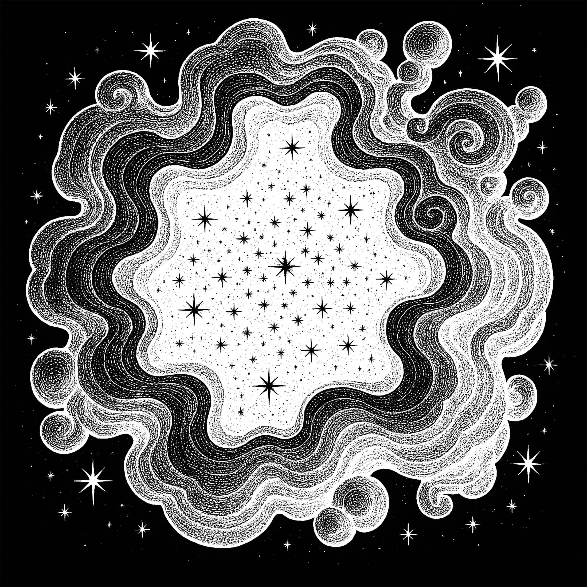
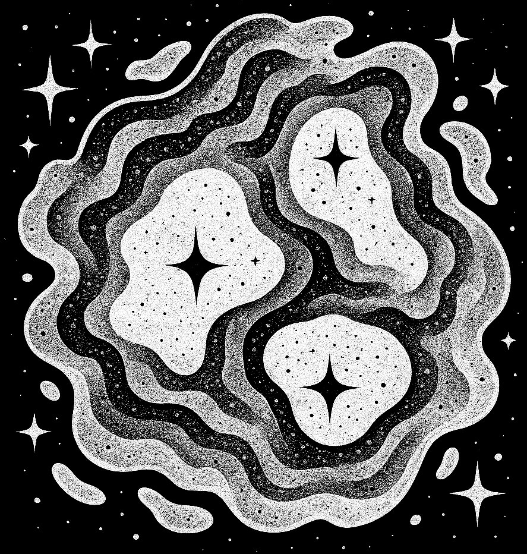

BOOK I
General Introduction
1
Methodological Statement
Context, Hypothesis & State of the Art
2
Spiral of History
When the Past Becomes a Future Again
3
Thought Beyond Intelligence
The Human Mind in the Age of AI
EASTERN WINDS
Mythical Atmospheres along the Silk Road
4
Dragon’s Breath
Clouds as Cosmic Energy in East Asian Culture
5
Turkish Storm
Carrying the Chinese Cloud to Roman Lands

BOOK II
Cosmic Cryptography
Talismanic Cities and the Algorithmic Universe
Digital Media: 3D Modeling and Procedural Design
Artisanal Media: Architecture of Constantinople and Samarkand
Artisanal Media: Architecture of Constantinople and Samarkand
6
Winds of Creation
Breath and Code in Sufi Cosmology
7
Algorithmic Mosaics
Proto-Digital Thinking on the Silk Road
8
Hacking the Universe
Lettrist Matrices and Quantum Computation
9
Encoded Cities
From Cosmic Plans to Smart City
10
Clouds of Analogy
From Dream Worlds to Machine Simulations
11
From Sophia to Data
Silicon Dreams of Constantinople
French Palace & Topkapı Palace (Istanbul, Turkey)
BOOK III
Pigment Turbulence
Iridescent Worlds within Clouds
Digital Media: Particle Systems and Fluid Dynamics
Artisanal Media: Silk Road Miniatures
Artisanal Media: Silk Road Miniatures
12
Jewel Eye
Crystallizing the World in Kaleidoscopic Images
13
Seal of Mani
Iridescent Colors as Proto-Pixels
14
Magnetic Icons
Enigma, Pneuma and Spatial Distortions
Villa Medici & Vatican Apostolic Library (Rome, Italy)
15
Born in Clouds
World-Making in Myths, Simulations & Cosmology
16
Cosmic Colors
From Pigment Radiation to Pixel Storms
17
Galaxies of Pigments
Dreaming the Cosmos through Clouded Papers
18
Algorithmic Sand Storms
From the Science of the Sand to Galactic Prophecies

BOOK IV
The Crystal Matrix
From Glazed Codes to Digital Mosaics
Digital Media: Augmented Reality and 3D Scanning
Artisanal Media: From African Mosaics to Korean Temples
Artisanal Media: From African Mosaics to Korean Temples
19
From Mosaics to Pixels
Walking within Simulated Gardens
UNESCO Club Volubilis (Carthage, Tunisia)
20
Marbles as Crystallized Clouds
When Geology Becomes Cosmic Meteorology
21
The City as a Star Map
Matrakçı’s Cosmographic Vision of Esztergom
22
The Augmented Flâneur
Walking through Layers of Myth and Code
23
Programming the City of Quartz
From Silica Tiles to Silicon Chips
French Institute of Central Asian Studies (IFEAC, Uzbekistan)
BOOK V
Synthetic Minds
Data Becomes Space, Thought Becomes Cloud
Digital Media: Machine Learning and Immersive Web Experience
Artisanal Media: All Studied Silk Road Paintings and Architecture
Artisanal Media: All Studied Silk Road Paintings and Architecture
24
Nebulous Mind of Artificial Intelligence
From Buddhist Cosmograms to Machine Creativity
Hanyang University (South Korea)
25
Dream Pixels Archive
Cosmic Journeys within Neural Clouds
General Conclusion
26
A Cloud Atlas
From Curly Clouds to Atmospheric Thought
Paradigm Recap
27
Spiral of the Cloud
Re-entangling Cosmos and Civilization
Speculative Conclusion
28
AI, Our Final Myth
Epilogue
Bibliography